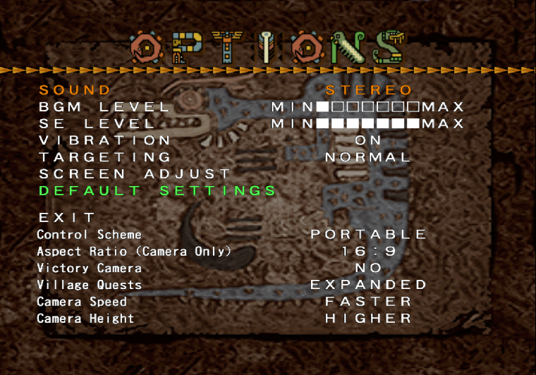

Monster Hunter 1J Plus
An improvement patch for the Japanese version of Monster Hunter 1.
Features
Settings
- Control Scheme: Play with original Analog controls or PSP-style from later games.
- Village Quests: Allows you to toggle an alternative method for the game to randomize which quests appear every time you enter the village, also includes new quests from the international release.
- Camera Speed: Allows you to increase the speed at which the camera rotates during hunts.
- Anamorphic 16:9: Adjust the FOV of the game, allowing the game to display its world in 4:3 or 16:9.
- Victory Cam: Stops the camera from targeting the last slain target enemy when completing a quest.
Installation and Download
Download and apply the patches in order, depending on your needs:
I have an unmodified MH1 Japanese ISO and would like to keep it in Japanese
Just apply 1J Plus.
1JPlus for Japanese ISO Download
I have an unmodified MH1 Japanese ISO and would like to play in English
First apply the english patch, then 1J Plus.
English v9 Patch
1JPlus for English ISO Download
I have an MH1 ISO that has already been patched with English v9
Just apply 1J Plus.
1JPlus for English ISO Download